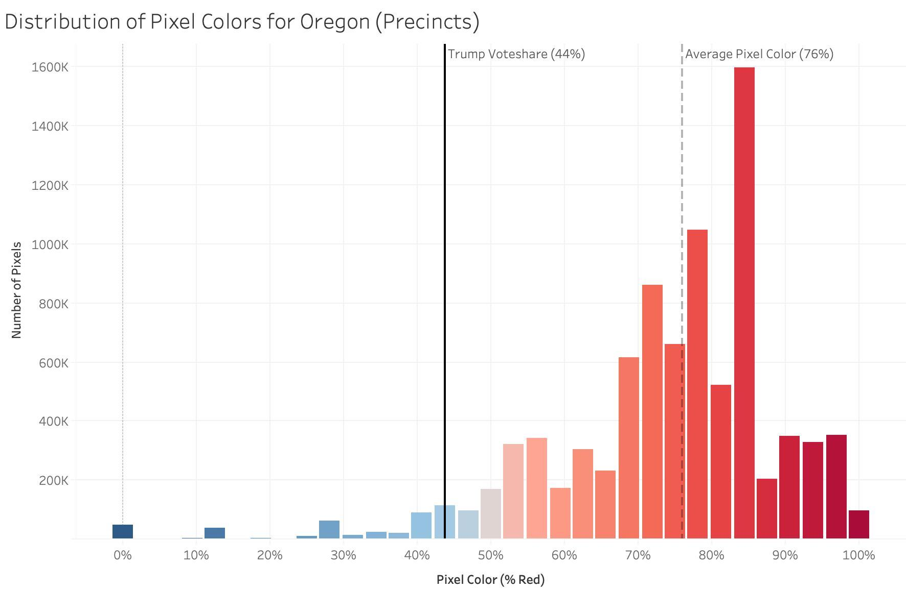
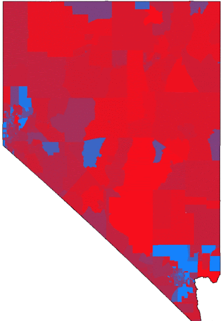

Fixing Election Maps using Street Lamps
Using precinct level data from the 2016 election, I explore a fundamental flaw in the conventional approach to election mapping: Rural areas take up lots of space on election maps despite being sparsely populated, creating significant visual bias. I develop a new approach to correcting this bias using nighttime satellite imagery. This post won 1st place in the Mapbox Election Mapping Challenge ("Best Data Mashup").
The problem with normal election maps
When presenting election results, standard practice is to do so at the level of administrative units (e.g. states, counties, precincts), coloring their whole area according to voteshare. You've come across maps like the one above before.
The New York Times boasts that this is an "Extremely Detailed Map of the 2016 Election" because it uses precincts, which are smaller than the more commonly used counties. But this type of map has a fundamental flaw that can't be solved by using smaller administrative units.
The coloring of the map is supposed to convey the amount of support a candidate recieved. Lots of blue is good for Clinton, lots of red is good for Trump, right? Not quite. Because sparsely populated counties tend to be much larger, coloring in the whole area of a county leads to a strange paradox: it actually creates an inverse relationship between the quantity of red or blue that we observe on the map and the number of votes cast for that candidate. In other words, the only vehicle through which information is transmitted through this map-- color-- actually communicates the opposite of what it says it does.
To demonstrate how this bias works, let's take a look at the election results for Oregon in 2016 at both the precinct and county level:

The blue-red color scale denotes Trump's voteshare-- if he got 100% of the vote in a precinct, the pixels in that precinct will be 100% red and 0% blue. If he got 0% of the vote, the pixels will be 0% red and 100% blue. If he got 50% of the vote, the pixels will be 50% red and 50% blue (so, purple). Seems pretty straightforward. But without cheating, can you tell who won?
Despite the fact that the map is overwhelmingly red, Trump only got 44% of the vote, losing the state by a large margin. Below is a histogram showing the color distribution of the map above. Remember, color is the only tool this map has to communicate the election result to us. If it did this job perfectly, the distribution of colors on the map would perfectly match the distribution of votes. Moreover, the average color of the map's pixels would equal the overall voteshare in the state. So given that Trump won 44% of the vote, the average pixel should be 44% red, right?

The histogram shows that the vast majority of pixels on the map are very red. Indeed, the average pixel is 76% red, meaning that the map is overstating Republican support by around 32%. Much of this bias is driven by places like Harney County, Oregon, which is outlined in the map above. At 26,428 square kilometers, it is roughly the size of Belgium. In the 2016 election, Harney County cast fewer than 2000 votes; 1489 for Trump, and 213 for Clinton.
Another fascinating dimension of this problem is that it actually gets worse when you use smaller administrative units. If we use counties rather than precincts, the average pixel color drops to 68% red, as urban precincts are lumped together with less populated precincts in the same county. So the New York Times' "Highly Detailed" precinct-level map is actually more visually misleading than the standard county-level map.
The point of these maps is to communicate who won a state, using color. But the bias introduced by precinct size is so extreme that it not only makes these maps useless-- they become actively misleading. This problem is well known, and is often summarized by the phrase "land doesn't vote, people do". There have been many attempts to correct maps for population size using dots, bubbles, and arrows, but the resulting maps are either highly abstract or lose important spatial infromation in the process. Using a NASA satellite that takes images of the earth at night, I outline a new approach to this problem.
Populated Area Voteshares
To reduce the bias posed by large, sparsely populated counties and precincts, I propose a straightforward solution: filtering the electoral data to only include populated areas using satellite-derived nighttime lights data. The premise is simple: populated areas are illuminated at night. The more people there are in an area, the brighter it is. Below is a technical overview of the methodology:

The end result is that only areas in which people live (i.e., areas that give off light at night) are assigned color. Areas that are uninhabited are left blank. Though this introduces large amounts of blank space into the map, the information that is conveyed is more accurate. The GIF below shows this process being applied to Dallas, Texas:

The precinct level election results give the impression that central Dallas is a blue island in a sea of red. Though this is somewhat true, it massively overstates the quantity of votes coming from rural areas surrounding the city. The nighttime lights layer shows that most of the land around Dallas is sparsely populated. Yet a small town in one of these rural precincts takes up as much space on the map as downtown Dallas. To correct for population density, the Populated Area Voteshare layer simply filters the precinct data to match the distribution of nightlights.
When we scale this up to the level of a state, it conveys information more accurately than the precinct map. Using our previous example of Oregon, let's see how the Populated Area Voteshare map compares to the precinct level map:

Remember that the average pixel in Oregon was 76% red at the precinct level. If we plot the histogram of pixel colors for the Populated Area Voteshare map, we get the following distribution:

The average pixel is now only 47% red-- not perfect, but we're now only 3% off instead of 32%. However, the fact that we can get within 3% of the state's true voteshare without using any direct measure of population is pretty astounding-- this means that the correlation between population density and the amount of light pollution is very high.
Here's the same process applied to Nevada, where the bias posed by sparsely populated precincts is even higher than it was in Oregon:

At the precinct level, it looks like a Trump landslide; the average pixel is 80% red, despite the fact that Trump only got 49% of the vote and lost the state. The Populated Area Voteshare map elminiates most of this bias--the average pixel color is within 2% of the state's final voteshare--and in the process highlights the battlegrounds of Reno and Vegas.
Finally, we can scale this up to the whole country:

In the filtered map, the pattern we saw in Dallas can be observed consistently across the whole country. Huge expanses of red in rural areas are replaced with dots. Greater metropolitan areas become clearly visible, almost always exhibiting a blue center surrounded by a ring of red:
The ability to observe the actual spatial distribution of votes is another key advantage of the nightlights approach relative to the dot/bubble approach; here, we can see exactly how the downtown area compares to the suburbs and the outlying towns. You can explore these spatial trends in voting patterns using the interactive Populated Area Voteshare map below:
The map is currently centered on Atlanta. The relative size (and therefore, electoral importance) of the outlying cities and towns is immediately clear, as are their political leanings. Zooming in gradually overlays a satellite basemap, which enables a detailed look at the types of houses and neighborhoods in a given area. Zooming in to central Atlanta reveals strong Democratic support emanating from high-density housing, while zooming in to Republican-leaning northern Atlanta shows the area to be mostly composed of affluent suburbs.
Though this approach has a number of advantages, it isn't perfect. I was startled to find out that several cities the size of Chicago had sprung up in rural Texas and North Dakota without my knowledge. I soon realized that these were actually huge oil fields whose methane flares light up the night sky (I filtered them out). This reflects the more general issue that the relationship between nighttime luminosity and population isnt perfect--not all that glitters can vote. However, if we mistakenly classify a few ski slopes and highways as rural towns, this bias is small compared to the standard practice of allowing 1700 votes to take up an area the size of Belgium.
So What?
Poor map design has profound implications for how we understand the information they're trying to convey. The narrative that emerged as journalists tried to metabolize the 2016 election was that a groundswell of support from disaffected rural voters left behind by globalization carried Trump to victory. This is the narrative that jumps out at you from the standard county or precinct level maps: blue coasts, red heartland. It took several years, but the narrative that rural economic anxiety led to Trump's victory was eventually debunked when study after study concluded that suburban voters were actually the main demographic responsible for his victory.
When we filter electoral maps using nighttime lights, Trump's "rural base" shrinks to the point of disappearing and his true suburban base becomes clearly visible. The GIF of Dallas illustrates this nicely. The precinct map makes it look like the rural areas around the city delivered Trump the state's 36 electoral college votes. The filtered map shows that these rural precincts are largely empty, and that the driving force behind his victory was the ring of suburbs surrounding the city. This pattern is visible across the whole country, and is particularly strong in the South.
Note on Data: Data on precinct-level results are from Harvard Dataverse, which is missing 10 states (NY, NJ, CT, PA, OH, IN, WV, MS, MO, GA). All analysis uses precinct-level data filtered using nighttime lights, but I interpolated county-level results in states where the precinct-level data was missing.